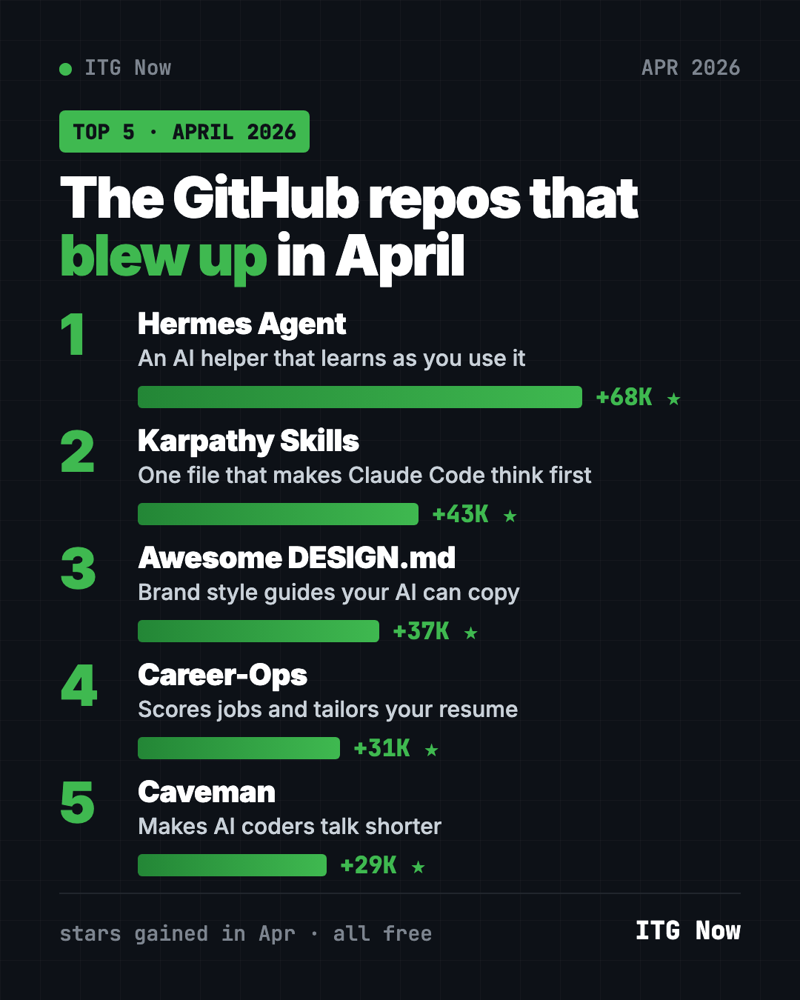
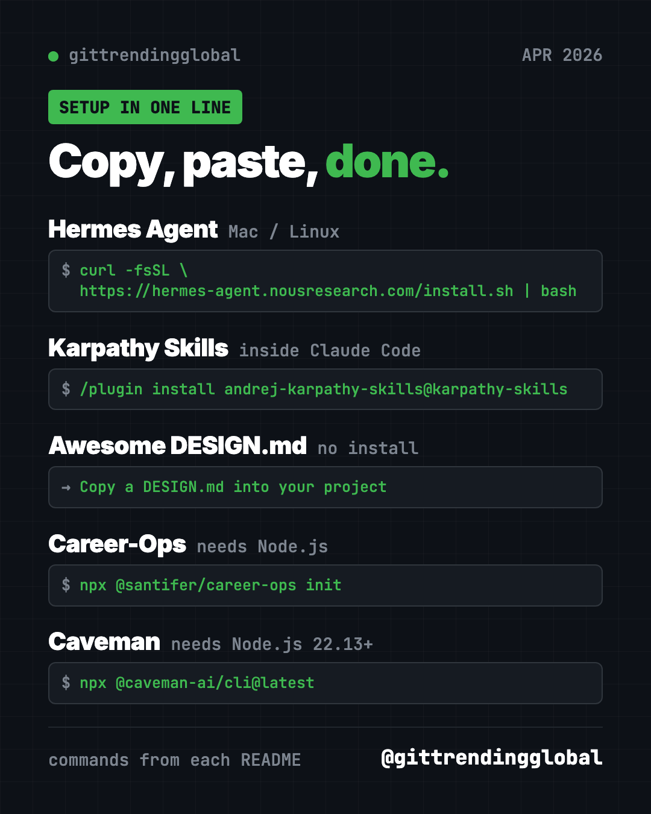
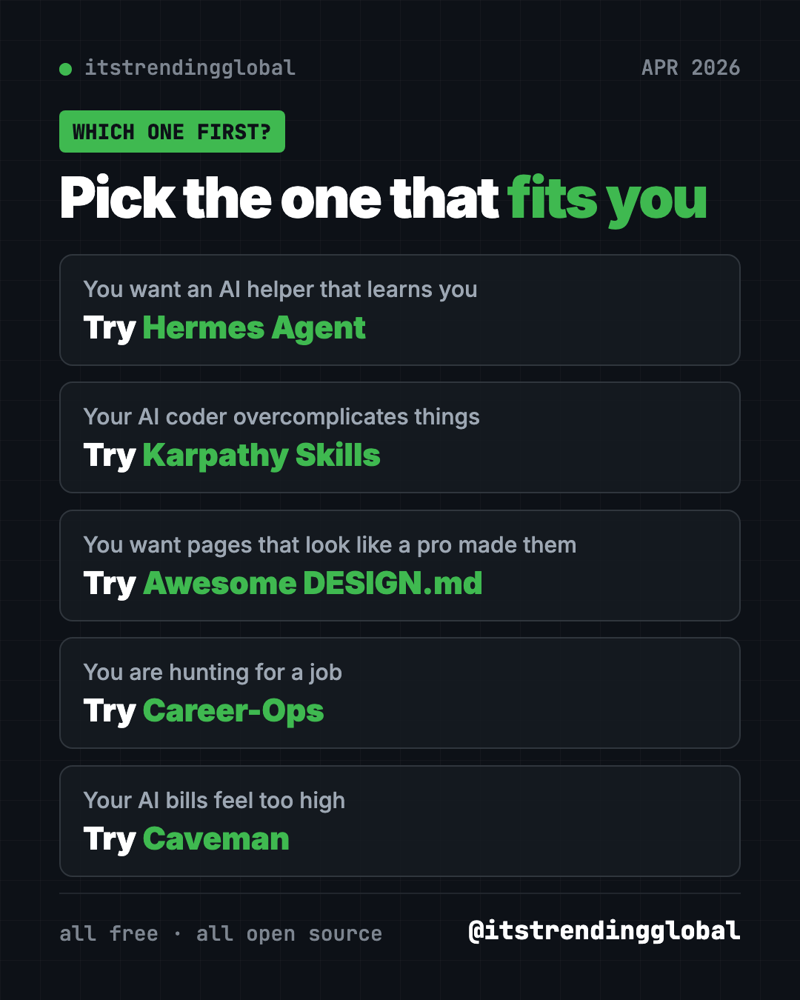

Best GitHub Repos of April 2026 (Free AI Tools)
- Published 15 Oct 2026
- Updated 16 Oct 2026
- 10 min read
- By the ITG Now team
In this guide (9)
- Key takeaways
- The 5 trending GitHub repos of April 2026 at a glance
- 1. Hermes Agent: an AI helper that grows with you
- 2. Karpathy Skills: one file that makes AI coders think
- 3. Awesome DESIGN.md: make AI-built pages look professional
- 4. Career-Ops: an AI job search helper that says "skip"
- 5. Caveman: why use many words when few do trick
- Which one should you try first?
- FAQ
The best GitHub repos April 2026 had to offer were Hermes Agent, Karpathy Skills, Awesome DESIGN.md, Career-Ops and Caveman. After three months of OpenClaw on top, a whole new top five took over. Two of them are just text files you drop into a folder.
A GitHub star is like a bookmark. When a repo gains tens of thousands of stars in one month, people clearly find it useful. For each one below, you get what it is, who it suits, everyday uses, the real setup command, and a prompt you can paste into an AI helper.
Key takeaways
- Hermes Agent led April 2026 with 68,000 new stars. It is an AI assistant that learns from what you do and gets better over time.
- Karpathy Skills is one instruction file that makes Claude Code think first and keep things simple.
- Awesome DESIGN.md is a free collection of style guides from famous websites that AI can copy.
- Career-Ops scores job listings against your resume and tells you which ones to skip.
- Caveman makes AI coding helpers answer in fewer words, which can cut your AI bill.

The 5 trending GitHub repos of April 2026 at a glance
| Repo | What it does | Who it's for | Free? | Works with |
|---|---|---|---|---|
| Hermes Agent | AI assistant that learns and remembers | Anyone who wants a personal AI helper | Yes (MIT), AI model may cost | Mac, Windows, Linux, chat apps |
| Karpathy Skills | One file of rules for AI coders | Claude Code and Cursor users | Yes (MIT) | Claude Code, Cursor |
| Awesome DESIGN.md | Brand style guides for AI to follow | People building websites with AI | Yes (MIT) | Any AI coding helper |
| Career-Ops | AI job search helper | Job seekers | Yes (MIT), AI model may cost | Claude Code, Codex, OpenCode and more |
| Caveman | Shorter AI answers, fewer tokens | Anyone paying for AI coding | Yes (Apache-2.0) | Claude Code, Codex, Gemini CLI and 30+ more |
Star gains are April 2026 numbers. Total star counts below were checked on GitHub on October 16, 2026.
💡 Tip: The "terminal" is a plain text window for typing commands. On a Mac, open Terminal. On Windows, open PowerShell. Paste a line, press Enter, wait.
1. Hermes Agent: an AI helper that grows with you
Stars: +68K in April · about 254K total
What it is: Hermes Agent is a free AI assistant from Nous Research, an AI lab. Its big idea is a learning loop. It creates new skills from things it has done, improves them as it goes, and searches its own past chats. Over time, it builds a picture of who you are and how you like things done. You can talk to it in the terminal or from Telegram, Discord, Slack, WhatsApp and Signal. You pick the AI model, and you can switch any time.
Who it's for: People who want a personal assistant that remembers them. Also OpenClaw users who want to try something new, since Hermes can import OpenClaw settings.
How you'd use it:
- Message it on Telegram to research something and send back a short summary.
- Teach it a routine once, like a weekly report, and let it reuse that skill.
- Ask it what you worked on last week, since it can search past chats.
Install it: On Mac, Linux or WSL2, copy and paste this:
curl -fsSL https://hermes-agent.nousresearch.com/install.sh | bash
On Windows, paste this into PowerShell:
iex (irm https://hermes-agent.nousresearch.com/install.ps1)
Then close and reopen your terminal, and run hermes setup to pick a model and set things up.
Or let Claude or Codex do it: Claude Code and OpenAI Codex are AI helpers that can run setup steps for you. Paste this into one:
Install Hermes Agent from https://github.com/NousResearch/hermes-agent using
the official installer for my system. Run "hermes setup" with me and explain
each choice in plain words. Then help me connect Telegram.
See Hermes Agent on GitHub · Read our full Hermes Agent guide
2. Karpathy Skills: one file that makes AI coders think
Stars: +43K in April · about 220K total
What it is: Karpathy Skills is a single instruction file for Claude Code, called CLAUDE.md. It is based on public comments by Andrej Karpathy, a well-known AI researcher, about mistakes AI coders make. He did not write the file himself. It gives the AI four rules: think before coding, keep it simple, only change what you must, and set a clear goal you can check. A matching rule file for Cursor is included.
Who it's for: Anyone whose AI coder guesses, overbuilds, or "fixes" things nobody asked about.
How you'd use it:
- Stop the AI from rewriting half your project to fix one typo.
- Make it ask you a question when your request is unclear.
- Get smaller, simpler code that is easier to check.
Install it: Inside Claude Code, paste these two lines:
/plugin marketplace add forrestchang/andrej-karpathy-skills
/plugin install andrej-karpathy-skills@karpathy-skills
Or add the file to one project. In that project's folder, copy and paste this:
curl -o CLAUDE.md https://raw.githubusercontent.com/forrestchang/andrej-karpathy-skills/main/CLAUDE.md
⚠️ Heads up: That command replaces any CLAUDE.md you already have. If you have one, the README shows a version that adds to the end instead.
Or let Claude or Codex do it:
Add the guidelines from https://github.com/multica-ai/andrej-karpathy-skills
to this project. If I already have a CLAUDE.md, append them instead of
replacing it. Then explain the four rules to me in one line each.
See Karpathy Skills on GitHub · Read our full Karpathy Skills guide

3. Awesome DESIGN.md: make AI-built pages look professional
Stars: +37K in April · about 122K total
What it is: A DESIGN.md is a plain text file that tells an AI how a website should look: colors, fonts, buttons, spacing, do's and don'ts. The idea comes from Google Stitch, a Google design tool. This repo collects ready-made DESIGN.md files based on real websites, like Claude, Stripe, Notion and Airbnb. Its badge counts 84 of them. Each one also comes with a preview page showing the colors and buttons.
Who it's for: Anyone building a website or app with AI who wants it to look polished, not generic.
How you'd use it:
- Give your portfolio site a calm, editorial look in one step.
- Keep every page of an app in the same style.
- Compare a few styles quickly by swapping the file.
Install it: There is nothing to install. The README's steps are:
- Copy a site's DESIGN.md into your project's main folder.
- Tell your AI agent to use it.
Or let Claude or Codex do it:
Look at the styles listed in https://github.com/VoltAgent/awesome-design-md,
suggest three that would suit a small bakery website, and save the one
I pick as DESIGN.md in this project. Then build a home page that follows it.
💡 Tip: Use these files for the look and feel only. Don't copy another company's logo or name, so nobody mistakes your site for theirs.
See Awesome DESIGN.md on GitHub · Read our full Awesome DESIGN.md guide
4. Career-Ops: an AI job search helper that says "skip"
Stars: +31K in April · about 75K total
What it is: Career-Ops is a free job search helper that runs inside an AI coding tool like Claude Code, Codex or OpenCode. You paste a job. It checks the posting is still live, scores it against your real resume, and tells you to skip weak fits below 4.0 out of 5. For good fits, it drafts a tailored resume, cover letter and answers. It never submits an application or sends an email. You always press Submit yourself.
Who it's for: Job seekers who are tired of sending applications into the void.
How you'd use it:
- Paste five job links and see which two are worth your evening.
- Get a resume tailored to one job, built only from your real experience.
- Prepare for an interview with practice questions and feedback.
Install it: You need Node.js, a free program from nodejs.org. Copy and paste this:
npx @santifer/career-ops init
cd career-ops
claude
Swap claude for codex or opencode if you use those. On first launch, it asks for your resume and goals in chat.
Or let Claude or Codex do it:
Set up Career-Ops from https://github.com/career-ops-hq/career-ops on this
computer using its Quick Start. Then help me add my resume and evaluate
one job link I paste, and explain the score in plain words.
⚠️ Heads up: Your resume goes to the AI provider you choose, and nowhere else, says the README. Always read every resume it makes before you send it.
See Career-Ops on GitHub · Read our full Career-Ops guide
5. Caveman: why use many words when few do trick
Stars: +29K in April · about 112K total
What it is: Caveman makes your AI coding helper talk like a caveman: short, blunt, and to the point. Code stays exact. Only the chatter shrinks. In the README's own example, a 63-token answer drops to 20 tokens. Tokens are the small chunks of text AI companies charge for, so fewer tokens can mean a lower bill. It works with Claude Code, Codex, Gemini CLI, OpenCode and 30+ more.
Who it's for: Anyone who pays for AI coding, or just hates long-winded answers.
How you'd use it:
- Get answers you can read in five seconds instead of fifty.
- Stretch a monthly AI plan further.
- Switch back to normal any time by saying "stop caveman."
Install it: You need Node.js 22.13 or newer. Copy and paste this:
npx @caveman-ai/cli@latest
It finds your AI tools, shows what it will change, and asks you to press Enter.
Or let Claude or Codex do it:
Install Caveman from https://github.com/JuliusBrussee/caveman using its
one-line installer. Show me what it changed, then answer one coding
question in caveman mode so I can compare.
See Caveman on GitHub · Read our full Caveman guide
Which one should you try first?
- You want an AI assistant that remembers you: start with Hermes Agent.
- Your AI coder overcomplicates things: add Karpathy Skills. It takes one minute.
- You want nicer-looking pages: grab a file from Awesome DESIGN.md.
- You are job hunting: try Career-Ops.
- Your AI bills feel too high: install Caveman.

For the month's headlines, read April 2026 in AI. You can also look back at March's best GitHub repos.
FAQ
What were the best GitHub repos of April 2026?
By stars gained, the top five were Hermes Agent, Karpathy Skills, Awesome DESIGN.md, Career-Ops and Caveman. Hermes Agent led with 68,000 new stars.
Did Andrej Karpathy make Karpathy Skills?
No. The file was written by someone else, based on Karpathy's public comments about mistakes AI coders make.
Are these trending GitHub repos free?
Yes, all five are free and open source. Hermes Agent and Career-Ops use an AI model you pick, which may charge per use.
Does Career-Ops apply to jobs for me?
No. It drafts your resume, cover letter and answers, but it never submits or sends anything. You review and press Submit.
Does Caveman make the AI less smart?
It changes how the AI talks, not what it knows. Code stays exact. You can turn it off any time by saying "stop caveman."
Keep reading

Trending GitHub Repos October 2026: The Top 5 So Far
The trending GitHub repos of October 2026 so far: a free Photoshop-style editor, an AI art studio, a big AI model for gaming PCs and more, explained.

Trending GitHub Repos This Week, Oct 5 2026: The Top 5
Trending GitHub repos this week Oct 5 2026: Matt Pocock's skills, the openGym workout tracker, e2e testing, HyperFrames video and claude-mem memory.

GitHub Trending September 28, 2026: Hindsight and Paperclip
GitHub trending September 28 2026: Hindsight, Paperclip, NVIDIA's OpenShell and a free 542-lesson AI course, with setup steps for each.